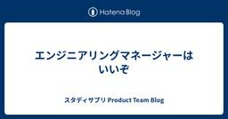

スタディサプリ Product Team Blog
https://blog.studysapuri.jp/
株式会社リクルートが開発するスタディサプリのプロダクトチームのブログです
フィード

エンジニアリングマネージャーはいいぞ
スタディサプリ Product Team Blog
こんにちは。スタディサプリの開発組織でエンジニアリングマネージャー（以下、EM）をしている @ojiry です。 本稿はスタディサプリProduct Team Advent Calendar 2024 20日目の記事になります。 私はEMになってから3年と3ヶ月ほど経つのですが、その中で得たEMという職種への学びやキャリアの魅力を簡単に紹介できればと思います。この記事を読んでEMやってみたいなと思える方が1人でも増えてくれると嬉しいです！ いきなりだけどEMってとても楽しいよ！ EMの業務について、みなさんはどのようなイメージを持っていますか？ピープルマネジメントや組織開発、事務作業などが思い…
10時間前

Credential Managerに移行するために調べたこと
スタディサプリ Product Team Blog
こんにちは。スタディサプリ Androidエンジニアの@moraylと@omtians9425 です。 スタディサプリのAndroidアプリでは、ID/パスワードの記憶に CredentialsApiを使っている箇所がありました。現在はCredential Managerが推奨となっており、そちらへ移行するために調べたことをまとめました。 「ID/パスワードの記録」の性質上、実装の確認や検証では「その記録をリセットする」ことが必要になるので、その方法についても解説します。 ライブラリandroidx.credentials:credentials は1.3.0を利用しました。 移行の背景 Sm…
1日前

現在時刻に依存する機能の動作確認コストを下げる基盤 -Time Injection- 2
2
スタディサプリ Product Team Blog
こんにちは。スタディサプリ小学・中学講座の Engineering Manager をしている @ywada526 です。 今回は、現在時刻に依存する機能の動作確認コストを下げる基盤について紹介します。この基盤は、社内ではコード上の名前をとって「Time Injection」という愛称 1 で呼ばれています。この記事内でも Time Injection という名前を使って説明します。 みなさんは、現在時刻に依存する機能の動作確認や品質保証はどのように行なっていますか。「時刻を固定した環境を用意する」「データを弄る」「ユニットテストで担保するから動作確認はしない」「コードをじっと見つめて問題ない…
2日前

『プログラマが知るべき97のこと』に学ぶ5つの金科玉条
スタディサプリ Product Team Blog
『プログラマが知るべき97のこと』を通読して得た特に重要な5つの教訓を筆者の独断と偏見と好奇でピックアップしました。
3日前
New Joiner こそ Working Out Loud ~ 具体的な実践方法と実践に向けた姿勢 ~
スタディサプリ Product Team Blog
こんにちは。24 卒で入社し、7 月から『スタディサプリ小学・中学講座』の開発チームで Web エンジニアをしている @ryomaejii です。 本記事は スタディサプリ Product Team Advent Calendar 2024 17 日目の記事で、 私が大切にしている考え方である Working Out Loud について紹介し、New Joiner こそ Working Out Loud するべき理由について話していきます。 対象読者 New Joiner これから New Joiner を受け入れるチームのメンバー リモートで働く機会のある全ての方々 Working Out …
3日前

スタディサプリ動画基盤におけるFastlyの利用と陥った落とし穴 2
スタディサプリ Product Team Blog
はじめに こんにちは、スタディサプリのプロダクト基盤...その中でも特に動画基盤の開発を行っている @highwide です。 これは スタディサプリProduct Team Advent Calendar 2024 16日目の記事です。 今日は動画基盤チームで利用しているFastlyの構成や、我々がハマってしまった落とし穴について書きたいと思います。 これは自分で掘った穴にハマっている長男です 動画基盤におけるFastlyの使い方 スタディサプリでは、動画の配信はFastlyを通じてHLS(HTTP Live Streaming)*1によって行っています。 HLSでは、動画再生のために必要な…
4日前

将来のプロダクト状態を考えて技術改善を計画する 1
スタディサプリ Product Team Blog
スタディサプリ小学・中学講座の iOS アプリエンジニアをしている @komaji です。本稿は スタディサプリProduct Team Advent Calendar 2024 15日目の記事で、私が所属する iOS チームでの技術改善の取り組み方について紹介していきます。 技術改善を計画する 継続的にプロダクトを開発する上では、技術的負債の返済や品質改善、開発者体験の改善といった技術的な改善が重要です。例えば、コードのリファクタリングやテスト自動化の導入が挙げられます。 これらの改善は一度実施して終わりではなく、プロダクトの成長や環境の変化に応じて継続的に実施する必要があります。しかし、全…
5日前
エンジニアリングオフィスチームを結成しました 1
スタディサプリ Product Team Blog
はじめに こんにちは。スタディサプリの開発グループでエンジニアをしている @ttokutake です。 本稿は 技術広報 Advent Calendar 2024 シリーズ 2の14日目の記事です。 今回はスタディサプリの開発グループ内でエンジニアリングオフィスチームを結成した話をしようと思います。 エンジニアリングオフィスとは スタディサプリにおけるエンジニアリングオフィスチームは「スタディサプリの開発組織において、開発者のエンゲージメントを高め、開発組織の良き文化を醸成し、ブランディングしていくこと」を使命としています。 我々の活動の多くはメルカリさんの Engineering Offic…
6日前
FlutterKaigi 2024に登壇しました
スタディサプリ Product Team Blog
こんにちは。『スタディサプリ for SCHOOL』 の開発に携わっている @koji-1009 です。 この記事はスタディサプリProduct Team Advent Calendar 2024 14日目の記事になります。カレンダー2週目も今日で終わりです。 本稿ではFlutterKaigi 2024に参加し、登壇した際の内容の補足などをします。特に、セッション時間の関係で省いたものが多いWeb対応について書きます！ FlutterKaigi 2024 セッションについて Flutter Web対応について CanvasKit x ヒラギノ角ゴシック HTMLレンダラー x iOS x No…
6日前

Bundle version だけ変えた iOS アプリをシュッと作る
スタディサプリ Product Team Blog
こんにちは、@manicmaniac です。 普段はスタディサプリの iOS 開発チームのマネージャーをしています。 前回 の投稿から1年ちょっとぶりの投稿です。 非常に限定された場面ではありますが、試行錯誤の時間を大幅に減らすことができる TIPS を紹介します。 困ったケース あるタスクで、fastlane pilot を用いて TestFlight にビルドをアップロードする際の設定を最適化するために、何度かビルドをアップロードして挙動を観察する必要がありました。 ご存知の方も多いと思いますが、 TestFilght にビルドをアップロードする場合は Info.plist 中の CFBu…
8日前
おそらく Go 1.24 からツールのバージョン管理を go.mod で行うためのコマンドが導入されます
スタディサプリ Product Team Blog
スタディサプリでソフトウェアエンジニアやエンジニアリングマネージャをやっている @pankona です。 Go 1.24 でツールのバージョン管理が便利になりそうという話をします。 (Go 1.23 現在) go install という便利なコマンドがある Go 1.24 の話をする前に、go install というコマンドの現状について簡単に触れておきます。 Go で書かれたツールのうち、所定の条件を満たすものは go install コマンドでインストールすることができます。たとえば goimports であれば、 go install golang.org/x/tools/cmd/goi…
9日前
スタディサプリの開発運用を支える GitHub Actions
スタディサプリ Product Team Blog
こんにちは。SRE の @int128 です。 スタディサプリのプロダクト開発では GitHub Actions を積極的に導入しています。本稿では、日常の風景に溶け込んでいる GitHub Actions を紹介します。 プロダクトの開発運用を支える GitHub Actions リポジトリとオーナーシップ 我々は monorepo を採用しており、すべてのマイクロサービスを同じリポジトリで管理しています。リポジトリのディレクトリ構成は下図のようになっています。 . ├── .github/workflows/ │ ├── マイクロサービス--test.yaml │ ├── マイクロサービス…
10日前
年末だし大掃除しよう！AWSコスト削減術ご紹介
スタディサプリ Product Team Blog
こんにちは！@_a0iです！ この記事はスタディサプリProduct Team Advent Calendar 2024 9日目の記事です！ スタディサプリProduct Team - Qiita Advent Calendar 2024 - Qiita 年末といえば大掃除、大掃除といえばコスト削減！ということで私たちスタディサプリ小中高のSRE主導で行ったAWSコスト削減術を6つご紹介します。 コスト削減術① 付与可能な全てのリソースにタグをつける AWSのコスト削減に大いに役立つツールの1つが「Cost Explorer」です。しかし、Cost Explorerを活用しようとしても、リソー…
11日前
エンゲージメントサーベイによる組織改善
スタディサプリ Product Team Blog
こんにちは。スタディサプリの開発グループでマネージャーをしている @ttokutake です。 本稿は スタディサプリProduct Team Advent Calendar 2024 8日目の記事です。 今回はエンゲージメントサーベイの実施と振り返りをして自分のチームの問題点の発見・解決をした事例を紹介しようと思います。 エンゲージメントサーベイとは # 自分 エンゲージメントサーベイとはなんでしょうか？簡潔に教えてください。 # Microsoft Copilot エンゲージメントサーベイとは、従業員の仕事に対する満足度や意欲、会社へのコミットメントを測定するためのアンケート調査です。これ…
12日前
Jetpack Compose の Canvas でお絵描き機能を実装する
スタディサプリ Product Team Blog
こんにちは、Androidエンジニアの@morux2です。スタディサプリ小学講座には、子どもがお絵描きツールで保護者とコミュニケーションを取れる「きょうもできた！」機能があります。本記事では、この機能の実装詳細をご紹介できればと思います。 「きょうもできた！」機能 完成形 「きょうもできた！」機能では、1日の学習のサマリ表示の上に、ペンとスタンプを使ってお絵描きをすることができます。 ペン : 色と太さを選択し、フリーハンドで絵を描くことができる スタンプ : 選択したスタンプを、タップで配置することができる また、次のような操作ができます。 ペンとスタンプの操作を切り替える 1つ戻る 全部消…
13日前
VimConf 2024 に参加してきました (Quickfix編)
スタディサプリ Product Team Blog
先日の VimConf 2024 のスポンサーになりました 記事にあるように、株式会社リクルートは、VimConf 2024 という世界最大の Vim の国際カンファレンスのスポンサーになり、何名かが VimConf に参加してきました。 (過去には Vim初心者に贈る、Vimの各種モードを完全に理解するとっておきの方法 にあるように、社員から登壇者も出ています) VimConf 2024について語ることは膨大な量があるのですが、スタディサプリProduct Team Advent Calendar 2024 の6日目の記事である本ページでは、VimConf 2024のうち daisuzuさん…
14日前
KubernetesのNode管理を楽にしたい〜EKS on Fargateの落とし穴紹介〜
スタディサプリ Product Team Blog
こんにちは！スタディサプリ小中高SREの@_a0iです。 この記事はスタディサプリProduct Team Advent Calendar 2024一日目の記事です！ 私たちはここ数年KubernetesのNode管理を楽に・効率的に行おうとKarpenterの導入に励んできました。 Karpenter導入時のトラブルに関するブログを書いてから1年、 blog.studysapuri.jp 私たちは「Amazon EKS on AWS Fargate（以降EKS on Fargate）」の導入を試みることでさらにNode管理を楽にすることをめざしました。 ようやく本番環境で安定稼働してきました…
15日前
宿題配信基盤の移行の旅がはじまりました！
スタディサプリ Product Team Blog
はじめまして、webエンジニアの@shushutochakoと@yoh-shimizuです。普段はスタディサプリ学校向けの事業でwebフロント&サーバサイドの開発をしています。 学校向けの事業では『スタディサプリ for TEACHERS』と言う先生向けのプロダクトがあり、先生が生徒に宿題を配信する機能があります。 宿題配信機能はサービスの中でも核となる機能で、多い月では数万件以上の宿題が配信されます。 サービスの中で重要な機能であるため、その基盤の安定性は極めて重要です。配信処理が不安定である場合に重大なインシデントが発生するリスクがあるため、日々改善に向けた取り組みが求められます。 既存の…
16日前
source maps を守る話
スタディサプリ Product Team Blog
こんにちは。スタディサプリの小中新規開発チームで Web エンジニアをしている @YutaUra です。 昨今の JavaScript を利用する開発では source maps の存在が欠かせません。今回の記事では、私たちが直面した source maps が壊れてしまう場面と、 source maps を壊さないために取り組んでいることについて話したいと思います。 source maps とは source maps に関しては web.dev の What are source maps? がとてもわかりやすいと思います。 簡単に説明をすると、 JavaScript(TypeScript…
17日前
GitHub Copilot の Usage API を叩いてみた結果を味わう
スタディサプリ Product Team Blog
本稿は スタディサプリProduct Team Advent Calendar 2024 2日目の記事です。 スタディサプリでソフトウェアエンジニアやエンジニアリングマネージャをやっている @pankona です。GitHub Copilot Usage API を味わってみた話をします。 GitHub Copilot は便利と評判ではある スタディサプリでは GitHub Copilot for Business を使っています。今年のはじめには以下のような記事も投稿しました。 blog.studysapuri.jp 先の記事を投稿したのが2024年1月22日のことだったようです。それ以前か…
18日前
GitHub Actions の異なる Workflow 間で Artifact をやり取りする方法
スタディサプリ Product Team Blog
はじめに こんにちは！ 私は教育支援小中高プロダクト開発部に所属し、スタディサプリの小中学生向けサービスの開発・運用を担当しています。 今回は、GitHub Actions で異なる Workflow 間で Artifact をやり取りする方法について解説します。 業務の中で、異なる Workflow 間での Artifact のやり取りが必要な場面があり、少々手間がかかりました。 Artifact とは？ まず、Artifact とは GitHub Actions における実行結果のファイルやデータのことを指します。 Workflow が実行されると、生成されたビルド結果やテストレポート、ロ…
19日前
社内サーベイを効果的に実施するためのポイント
スタディサプリ Product Team Blog
こんにちは。スタディサプリの認証チームに所属している @taki-21 です。 今回は社内サーベイを効果的に実施するためのポイントについて紹介したいと思います。 はじめに 私たちのチームは 2024 年 4 月から 9 月までの 6 ヶ月間を通して他チームとスムーズな連携を図るために、社内でのプレゼンスを向上させる取り組みを行ってきました。 今回はその取り組みの中の一つであるサーベイに焦点を当てて「サーベイを効果的に実施するためのポイント」についてお伝えしたいと思います。 先に結論を書くと今回の取り組みを踏まえて以下の点について気をつけると効果的なサーベイになるのではないかと思っています。 サ…
1ヶ月前
GitHub Actions で Working out Loud を効率化しよう！
スタディサプリ Product Team Blog
GitHub Actions × Working out Loud 最終更新日: 2024年12月09日(月) 1. ご挨拶 2. 今回のトピック 3. 要件 4. 仕様 4-1. School Career Work Initiation ラベル付与時 4-2. School Career Work Initiation ラベル除去時 5. 結果 1. ご挨拶 こんにちは。 前回の「社内技術ドキュメンテーションを科学する」から10ヶ月ぶりの投稿になります、@hayat01sh1da です(実はエントリーはあったのですが没になりまして...アウトプット欲はいつでもあるのです)。 22年人生を共…
2ヶ月前
DroidKaigi 2024 で GraphQL クライアント実装について登壇しました
スタディサプリ Product Team Blog
こんにちは、Androidエンジニアの@morux2です。先日 DroidKaigi2024 にて、「GraphQLの魅力を引き出すAndroidクライアント実装」という発表を行いましたので、その報告をさせていただきます。 2024.droidkaigi.jp 発表資料はこちらになります。 speakerdeck.com 早速アーカイブも公開していただいておりますので、ぜひご覧ください。 www.youtube.com 発表内容のサマリ スタディサプリ小学講座・中学講座で GraphQL を全面採用し、2年ほど運用した中で蓄積された ADR (Architecture Decision Rec…
3ヶ月前
MagicPod で効率アップ！Android アプリの E2E テスト自動化
スタディサプリ Product Team Blog
こんにちは、Android エンジニアの @myamamic です。スタディサプリ小中講座の Android アプリ開発を担当しています。 この記事では私たちが実施している E2E テストについて、実施の目的や自動化によって受けている恩恵、E2E テストをどのように運用しているかを紹介します。 はじめに: E2E テストの目的 E2E テストケースの観点 E2E テストの自動化 MagicPod について E2E テストの運用: ケースの作成や修正 E2E テストの運用: MagicPod 一括実行のスケジューリング まとめ: E2E テスト自動化によって得られた恩恵 不具合の早期発見 アプリ…
4ヶ月前
VimConf 2024 のスポンサーになりました
スタディサプリ Product Team Blog
こんにちは。thinca です。 このたび株式会社リクルートは、VimConf 2024 のブロンズスポンサーになりました。 私は VimConf 2024 にスタッフとしても関わっています。今回は VimConf についてや、スポンサーすることの意義について、スタッフ側の視点から書いていこうと思います。 VimConf とは 公式サイトから引用すると「VimConf は、世界初かつ世界で唯一のコミュニティによって定期運営されているVimの国際カンファレンス」です。 2013 年に始まり、コロナの期間中はお休みしていましたが、今回で 9 回目になります。 毎年海外から Vim に関わる著名人を…
4ヶ月前
スタディサプリ開発メンバーでSoftware DesignのGraphQL特集を執筆しました！
スタディサプリ Product Team Blog
はじめに こんにちは。スタディサプリでプロダクトプラットフォームの開発を行っている @highwide です。 この度、スタディサプリの開発メンバーで技術評論社様の「Software Design 2024年9月号」の第一特集「実例から学ぶ！GraphQLでアプリケーション開発 現場における使いこなし方を徹底チェック」を執筆しましたので、紹介させていただきます。 gihyo.jp 記事の内容について 全5章の構成で、下記のような章立てとなっています。 第1章「GraphQLとは - 利点・注意点を整理して輪郭をつかむ」(@ywada526) 第2章「GraphQL導入 - クエリを書いてデータ…
4ヶ月前
「現場で実践！RAG活用術 Lunch LT ― 運用して分かった"つらみ"とその対策」で登壇してきました＆質問の回答 #RAG_Findy
スタディサプリ Product Team Blog
こんにちは。@chaspyです。 先日こちらのイベントで登壇してきました。 findy.connpass.com 発表資料はこちらです。 概要については以下の @aoi1 さんの以下のブログも参照ください。 blog.studysapuri.jp 内容は資料を見ていただきたいですが、ポイントとしては以下になります。 基本的には検索システムと捉えている AI Search がクエリの生成と検索結果から回答生成を行っている そのため、E2E で評価しないと実際のアプリと同様の回答が得られない 若干高コストにはなるが、E2E で簡易的はリグレッションテストを行っている とにかく素早くフィードバックサ…
5ヶ月前
FigmaのCode ConnectとCode Generation APIを導入しました
スタディサプリ Product Team Blog
はじめに スタディサプリ小学・中学講座を開発している Android エンジニアの @maxfie1d です。 スタディサプリ小学・中学講座ではデザイナーがFigmaで作成したデザインデータをもとにエンジニアがUIのコードを書いています。 UIのコードを書くことはとてもクリエイティブで楽しい作業ですが、一方でUIにたくさんあるプロパティを読み取りながらコードに反映するのはそれなりに時間がかかり面倒でもあります。 この面倒な「デザインからコードを起こす作業」を効率化できないかどうかを考え、Figma の Code Connect と Code Generation APIを導入したのでご紹介しま…
5ヶ月前
QAチームが行う非機能の試験〜障害許容性試験〜 Non-functional testing conducted by QA team - Fault tolerance testing -
スタディサプリ Product Team Blog
非機能試験についての概要と、障害許容性試験について詳しく説明しています。
5ヶ月前